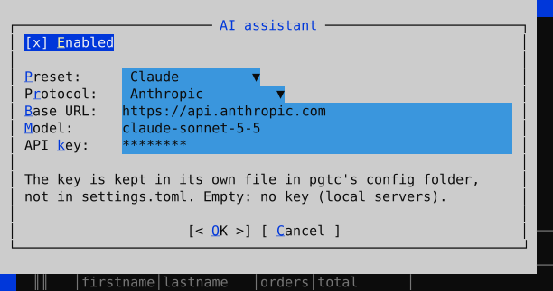
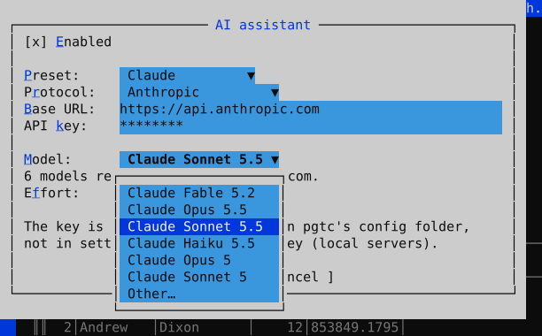
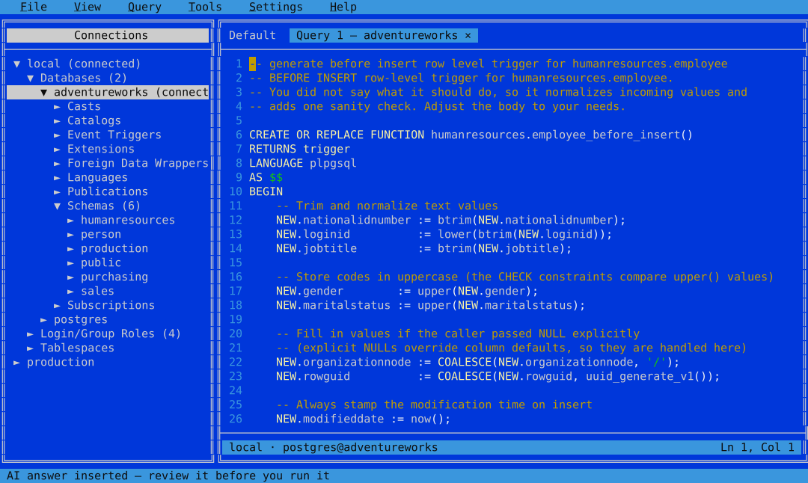

AI assistant
The assistant sends a prompt to a language model together with the schema of the tab's database — read from the system catalogs, no table data — and the editor text. The model's answer is inserted into the SQL editor and is never executed by pgtc: review it and run it with F5.

Setting it up
The assistant is disabled until it is configured in :

| Field | Meaning |
|---|---|
| Enabled | Master switch. Off: F8 reports AI is not set up and no request is ever made. |
| Preset | Fills in protocol, base URL and model for a known provider (table below). Every field stays editable; (custom) leaves them as they are. |
| Protocol | The API: OpenAI-compatible (POST {base URL}/chat/completions, key as Authorization: Bearer) or Anthropic (POST {base URL}/v1/messages, key as x-api-key). |
| Base URL | The endpoint all requests go to. Required when the assistant is enabled. |
| Model | The models the provider lists for the key (GET {base URL}/models; Anthropic: /v1/models). The list is read when the dialog opens and again after the preset, the base URL or the key changes (on leaving that field); the line below it shows the number of models read, or the error. Claude's models show their names (Claude Sonnet 5.5), newest first. The last entry, Other…, takes a model ID typed by hand — for a service without a model list. Required. This is the default model of the F8 dialog. |
| Effort | The model's reasoning effort: Default (no effort parameter is sent — the model's own default), Low, Medium, High, Extra high, Max. The OpenAI-compatible protocol knows three levels (reasoning_effort): the two highest are sent as high. More effort: better answers to hard requests, slower and more expensive. This is the default effort of the F8 dialog. |
| API key | The key from your provider's console. Type it, or paste it with your terminal's paste (e.g. a right click, or Ctrl+Shift+V), and press OK. A saved key shows as ********:
|

For a new provider: choose the preset, enter the key, leave the field — the model list is read; choose a model, tick Enabled, press OK. OK also saves the model list: it is what the F8 dialog offers. To pick up models the provider has added since, open this dialog again and press OK.
The key is saved in its own file, ai_key, in pgtc's config folder next to settings.toml
(Reference → Files and folders) — on Linux and macOS with mode 0600,
like .pgpass. It is not in settings.toml, so that file can be copied or shown without
exposing the key, and it is never written to the log. The other fields are in the [ai] section of
settings.toml.
Providers
The two protocols cover nearly every model provider; a preset only fills in protocol and base URL:
| Preset | Protocol | Base URL | Key |
|---|---|---|---|
| Claude | Anthropic | https://api.anthropic.com | needed |
| OpenAI | OpenAI-compatible | https://api.openai.com/v1 | needed |
| Grok | OpenAI-compatible | https://api.x.ai/v1 | needed |
| Gemini | OpenAI-compatible | https://generativelanguage.googleapis.com/v1beta/openai | needed |
| Ollama (local) | OpenAI-compatible | http://localhost:11434/v1 | no key |
Other services with an OpenAI-compatible endpoint — Mistral, DeepSeek, Groq, OpenRouter, LM Studio, vLLM, llama.cpp's server — work too: choose (custom), the OpenAI-compatible protocol, and their base URL and model.
With a local model (Ollama, LM Studio, …) the schema never leaves the machine — the option for databases whose schema must not be disclosed to a third party.
Asking
Press F8 in the editor or the results of a query tab, or choose . Preconditions:
- the assistant is configured (otherwise: AI is not set up (Settings → AI…)),
- the query tab has a session (Connect the query tab first),
- the saved connection is not marked AI not allowed,
- the tab's session is idle: no statement running, no paused result (
1,000+ rows) and no export — the catalog query would have to end that result; fetch all rows or close the result first, - no other AI request is pending.
The dialog opens immediately. In the background pgtc runs one read-only catalog query on the tab's own session to read the schema (What is sent).
| Part | Keys | What it does |
|---|---|---|
| Prompt | Alt+P | The request, in natural language. The text wraps; Enter starts a new line, Tab leaves the box; ↑ / ↓ move by the rows as you see them. In an empty box ↑ / ↓ bring back the prompts of this session. A prompt you did not send — the dialog closed with Esc or Cancel — is there again the next time. |
| Scope | Alt+O | Whole database, or Schema … to send the objects of one schema only — a smaller request for databases with many relations. |
| Model | Alt+M | The model for this request; initially the model of the settings. The list holds the models that read and saved (no network request is made here). Pick a small, fast model for a simple query, the strongest for a hard one. |
| Effort | Alt+E | The effort for this request; initially the value of the settings. A choice made here does not change the settings. |
| The info line | Sends about N tokens to host: the size of the complete request, estimated at four characters per token, and the host of the base URL. It follows the scope and the prompt. Above about 100,000 tokens the line below warns: Large request: it may be refused or cost a lot. Try one schema as scope. | |
| Send | Alt+S, Ctrl+Enter | Sends the request. An empty prompt is refused; while the catalog query is still running, the dialog stays open. |
| Cancel | Esc | Closes the dialog; nothing is sent. |
Naming tables and columns: autocomplete

sales. the list shows that schema's tables, views, functions and types.The prompt box completes object names from the schema the dialog has already read; no further catalog queries are run:
- Ctrl+Space (or Alt+/) opens the list for the word before the cursor: schemas, and every
table, view, function and type — matched on the unqualified name (
custfindssales.customer). Objects are inserted schema-qualified, independent of anysearch_path. - Typing a . opens it by itself: after a schema (
sales.) with the objects of that schema, after a table (sales.customer., orcustomer.when only one schema has that name) with its columns. - It does not open by itself while you type words — in a sentence that would get in the way.
- ↑ / ↓ choose, typing narrows the list, Enter or Tab puts the name in (no new line), Esc closes only the list.
- One exception: in a list that opened by itself after a . and that you have not used yet — no arrow key, no letter typed — Enter is a new line, because your sentence may simply have ended with a table name. Tab takes the entry there too.
- Identifiers that need quoting are quoted (
hr."Employee"). The list offers every schema, whatever the Scope. - Until the catalog query has returned, the list shows loading….
Effective prompts name the result wanted and its constraints: “Orders of the last 30 days per territory, with the total and the average”, “A procedure that moves a customer to another territory and writes the change to sales.customer_history”, “Rewrite the selected query without the subquery”.
What is sent
One HTTPS request per Send, from pgtc directly to the base URL — there is no pgtc service in between. It contains:
- The server version and the database name (
PostgreSQL 16.2,adventureworks), so the SQL is valid for that major version. - The schema of the database, or of the schema chosen as scope, as compact text. It is read with a single
query on the system catalogs (
pg_namespace,pg_class,pg_attribute,pg_attrdef,pg_constraint,pg_proc,pg_type/pg_enum):- tables, partitioned tables, views, materialized views and foreign tables with their columns: name,
data type (
format_type()),NOT NULL, and theDEFAULT/GENERATED … AS IDENTITY/GENERATED ALWAYS AS (…)clause — so the model knows which values the server supplies; PRIMARY KEY,UNIQUE,FOREIGN KEYandCHECKconstraints, aspg_get_constraintdef()prints them;- functions and procedures as signatures: identity arguments and result type;
- enum types with their labels;
- the comments (
COMMENT ON) of relations, columns and functions, collapsed to one line and truncated to 200 characters. They tell the model what the names mean: a commented schema gets better answers.
pg_catalog,information_schema, thepg_toastandpg_temp_*schemas; partitions (relispartition) — only the partitioned parent is sent; objects that belong to an extension (pg_depend.deptype = 'e'); aggregates and window functions. Not sent either: view definitions, function bodies, indexes, triggers, sequences, privileges. - tables, partitioned tables, views, materialized views and foreign tables with their columns: name,
data type (
- The editor text, when not empty. A selection is delimited by markers, so the model knows which part is meant — its answer replaces that part. A text longer than 50,000 characters is cut to the whole lines around the cursor, and the dialog says so.
- The prompt, with fixed instructions: PostgreSQL SQL only, valid for that server version, explanations
as
--comments, use the objects of the schema.
Never table data: no rows, no result sets, no planner statistics (pg_stats), no row counts.
Nothing from other databases of the cluster, no roles, and no connection parameters other than the database name.
The server certificate of the provider is verified against the operating system's trust store. A proxy set in the
environment (HTTPS_PROXY) or in the system's proxy settings is used.
With the Anthropic protocol, the instructions and the schema are marked for the provider's prompt cache
(cache_control): further requests with the same scope within a few minutes cost a fraction of the first
and start sooner. (OpenAI-compatible services that cache do so on their own.)
Waiting, cancelling, errors

Progress in Messages

The answer is requested as a stream (server-sent events), and every step of the request is written to the Messages of the query tab (Alt+M shows them; pgtc does not switch there by itself):
| Line | Meaning |
|---|---|
| AI: asking Claude Sonnet 5.5, effort high — about 12,400 tokens to api.anthropic.com | The request was sent: model, effort (when not the default), estimated size, host. |
| AI: thinking… | The model has started to reason about the request. |
| AI: thinking: … | The model's own short summary of its thinking, as it arrives — you see what it is working out. Claude sends these; other services only where they offer it. |
| AI: writing the answer…, AI: writing… 3,000 characters | The SQL is being written; a line for about every 1,500 characters. |
| AI: 12,460 tokens sent (11,900 from the prompt cache), 840 received | The token usage the provider reports — and how much of the input its prompt cache covered. |
| AI: answer complete after 9.4 s — inserted into the editor, not run | The end. Or AI: failed after … with the error, or AI: cancelled after …. |
The SQL is inserted into the editor only when the answer is complete — never a partial statement.
- Esc cancels the request; an answer that comes later is ignored. (While a menu, a dialog or the quick search is open, Esc closes that first.)
- An error — a rejected key, an unknown model, no connection to the host — is shown in an error message with the provider's own text. The editor is not changed.
- Timeouts: 15 s to connect to the host, 3 minutes without any data from the provider (The AI service stopped answering), 15 minutes for the whole answer.
The answer

LEFT JOIN. Nothing has run.- It replaces the selection, or is inserted at the cursor when nothing is selected — on a line of its own.
- The prompt precedes it as
--comment lines, as a record of what was asked. - Markdown code fences are removed; text the model wrote around them becomes comments.
- Ctrl+Z removes the whole answer in one undo step.
- It is never executed. Review it before F5: a model can misread the request, reference a wrong column, or write DML or DDL you did not ask for. With auto commit off the statement runs inside a transaction block and can still be rolled back.
Another example: a trigger

The prompt does not say what the trigger should do, and the model says so in its first comment: it wrote a
reasonable body — trimming and upper-casing values, filling in values passed as NULL, stamping
modifieddate, and a check that the employee was 18 when hired — for you to change. It knew the column
names, their types and the table's CHECK constraints from the structure. Below the function follow
DROP TRIGGER IF EXISTS … and CREATE TRIGGER … BEFORE INSERT … FOR EACH ROW.
Read every answer before running it — here the DROP TRIGGER would silently replace a
trigger of the same name. The more precisely you ask (“… that sets modifieddate and refuses employees under
18”), the less the model has to guess.
Privacy: AI not allowed
For servers whose schema must not be disclosed — production, customer systems — set
AI not allowed on the saved connection (;
ai_not_allowed = true in settings.toml). F8 is then refused with AI is not
allowed for this connection in every query tab of that server, before any catalog query or request is made.
Without that flag, the schema of the database is sent to the provider on every Send. Check the provider's terms for data retention.
If it does not work
| Message | Cause | What to do |
|---|---|---|
| HTTP 401 / HTTP 403 | No key is saved, or the key is wrong, expired, or not allowed to use the model. | Check the key in your provider's console and enter it again in . |
| HTTP 404 / model not found | The base URL or the model name is wrong. | Compare them with your provider's documentation; mind the protocol. |
| An error that names effort, output_config or reasoning_effort | The chosen model does not take an effort setting (some older and some local models). | Choose Default as the effort. |
| HTTP 429 | Too many requests, or the account has no credit left. | Wait, or check your plan. |
| Could not connect to … | The host of the base URL is not reachable: no network, a proxy, or a local model server that is not running. | Start the local server; check the base URL. |
| The answer ends with -- (the answer was cut off here: it reached the model's length limit) | Very long answers stop at the model's limit; pgtc marks it, because a half statement must not be run as it is. | Ask for less at once — one function per request. |
| The schema of the database could not be read | The catalog query failed on the tab's session — usually because the session is in an aborted transaction (current transaction is aborted, SQLSTATE 25P02). | , then F8 again. |